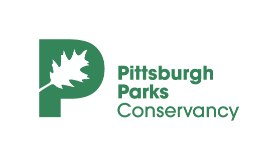

Analysis Goals:
Build metrics to quantify which areas of Pittsburgh visit each park the most
Look into demographics of block groups surrounding parks and the visitation rates of those block groups to assess park equity
Predict what parks outside our scope look like in terms of visitation